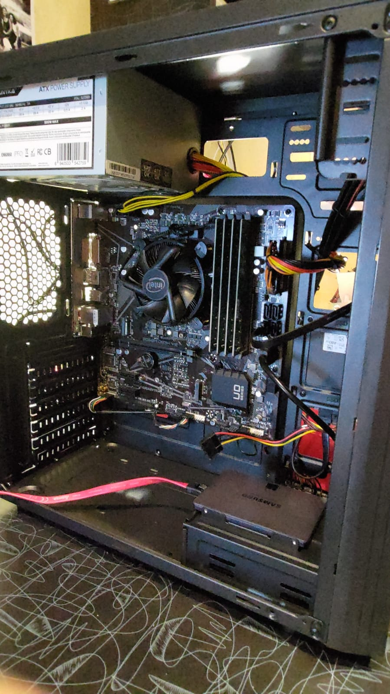
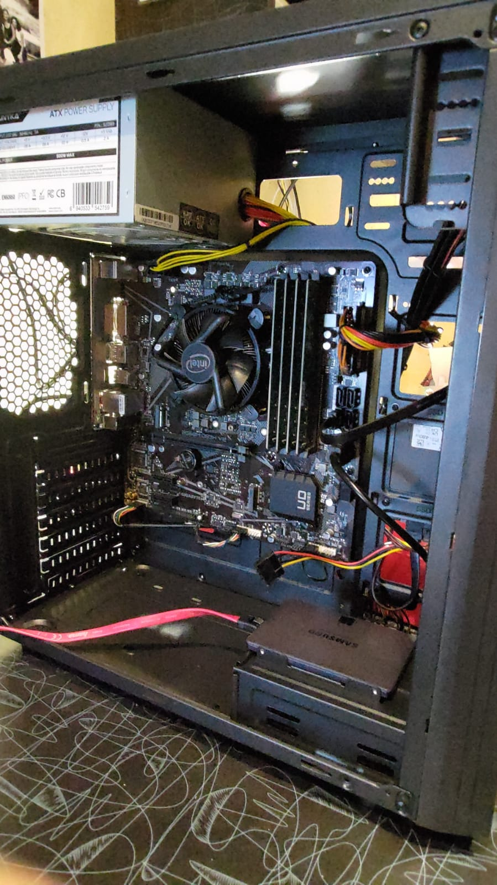
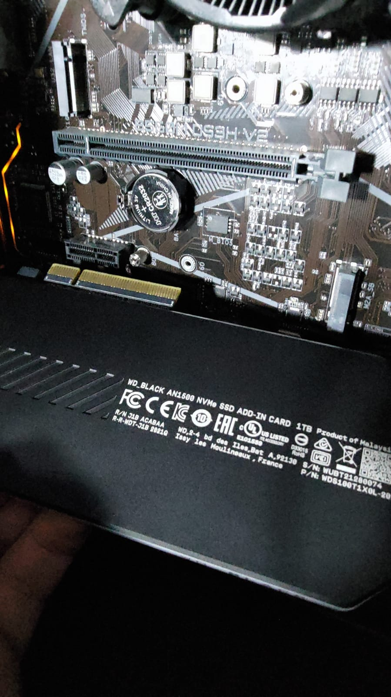

Machinery
Hardware available (14 Machines total):Wind01
Wind01: Gen11 Intel Workstation / 64 GB RAM / SSD / Spain (Chihuahua & Cerberus Archive synced) 

Commissioning Date:
Working Hard Drive:
Power Measurement:
Wind02
Wind02: Gen11 Intel Workstation / 64 GB RAM / NVMe-SSD / Spain (Evmos synced)
Extra aircooling and fans
Commissioning Date:
Working Hard Drive:
Power Measurement:
Wind03
Wind03: Gen11 Intel Workstation / 32 GB RAM / NVMe / Germany (Archive chihuahua synced)
Commissioning Date:
Working Hard Drive:
Power Measurement:
Wind04
Wind04: Workstation Ryzen 5 5600G / 32 GB RAM / NVMe-SSD / Germany (Cerberus Archive synced)Commissioning Date:
Working Hard Drive:
Power Measurement:
Wind05
Wind05: Racked Gen12 Intel Workstation / 64 GB RAM / NVMe / [Lives in a German DataCenter -Colocation-] (Juno 5000/0/103 synced)Side notes: Contains a Chihuahua copy. Halted.
Online updates of their energy:
Juno, Pruned 5000/0/103 is running on an WD Black SN750, 2TB since the 17.06.2022.
Commissioning Date: 17.06.2022
Working Hard Drive: WD_BLACK SN750 2TB
Alternate Hard Drive: SPCC M.2 PCIe SSD 2TB NVMe
Power Measurement: (paused) Wind05 (Watts)
Wind06
Wind06: Racked Gen12 Intel Workstation / 64 GB RAM / NVMe / [Lives in a German DataCenter -Colocation-] (Nomic Testnet)We swapped some drives to this workstation, we'll keep it on hold until we have workload.
Commissioning Date:
Working Hard Drive:
Power Measurement:
Wind07
Wind07: Racked Gen12 Intel Workstation / 64 GB RAM / NVMe / [Lives in a German DataCenter -Colocation-] (Juno Testnet uni-5)Wind08
Wind08: Intel Xeon W-2145 / 128 GB RAM Server / NVMe / Finland (Juno synced)(This is a dedicated server)
Wind09
Wind09: Ryzen server / NVMe / Finland (Nomic synced)This is a dedicated server
Wind10
Wind10: HP Proliant DL120 Gen9 rack server / 32 GB RAM / NVMe / [Lives in a German DataCenter -Colocation-] (Cerberus Testnet inferno-2)
Old picture with a Kingston NV1. This hdd passed away because of human error :_)
Commissioning Date:
Working Hard Drive:
Power Measurement:
Wind11
Wind11: Gen3 Intel Workstation / 32 GB RAM / SSD / Germany (Tenderduty / Restake)Commissioning Date:
Working Hard Drive:
Power Measurement:
Wind12
Wind12: 1 extra Back up for Nomic: AMD Workstation / 12 GB RAM / SSD / Germany (Acrechain)Commissioning Date:
Working Hard Drive:
Power Measurement:
Wind13
Wind13: Fujitsu rack server / 32 GB RAM / NVMe / [Lives in a German DataCenter -Colocation-] (Cerberus)
Commissioning Date:
Working Hard Drive:
Power Measurement:
Wind14
Wind14: Racked Gen11 Intel Workstation / 32 GB RAM / NVMe / [Lives in a German DataCenter -Colocation-] (Nomic synced)
Commissioning Date:
Working Hard Drive:
Power Measurement:
Wind15
Wind15: HP Proliant DL160 Gen9 rack server / 128 GB RAM / NVMe / [Lives in a German DataCenter -Colocation-] (Evmos synced)Energy consumption Evmos: Evmos Validator on Wind15 (Watts)


Commissioning Date: 05-05-2022
Working Hard Drive: WD BLACK AN1500 1TB
Power Measurement: Wind15 (Watts)
Wind16
Wind 16: Fujitsu Primergy rack server / 96 GB RAM / NVMe / [Lives in a German DataCenter -Colocation-] (Chihuahua synced)
Commissioning Date: 13-05-2022 (Refurbished)
Working Hard Drive: WDC WD BLACK SDBPNTZ-2T00-1106
Power Measurement:
Wind18
Wind 18: Intel Server, board S2600WT2 [Lives in a German DataCenter -Colocation-] (Chihuahua testnet / Jackal)
CPU: Intel® Xeon(R) CPU E5-2620 v3 @ 2.40GHz × 24
RAM: 64 GB
Commissioning Date: 17-08-2022 (Refurbished)
Working Hard Drive: WD BLACK AN1500 2TB
Wind19
Wind 19: Gen12 Intel Workstation / 32 GB RAM / NVMe / [Lives in a German DataCenter -Colocation-] (Syncing an Evmos Archive)
Commissioning Date: 07-07-2022
CPU: Gen12 12100F
RAM: 32 GB
Working Hard Drive 1: Corsair MP600 NVMe (.evmosd *except):
Working HDD 2: Samsung 870 QVO 8TB (* application.db, binded)
Working HDD 3: (* blockstore.db, binded)
Power Measurement:
Wind20
Wind 20: Gen12 Intel Workstation / 32 GB RAM / NVMe / [Lives in a German DataCenter -Colocation-] (Juno Archive / Rebus Backup / Cerberus Testnet)
CPU: Gen12 12100F
Commissioning Date: 07-07-2022
Working Hard Drive: Samsung SSD 970 EVO Plus 2TB
Power Measurement:
Wind21
Wind 21: Gen12 Intel Workstation / 32 GB RAM / NVMe / [Lives in a German DataCenter -Colocation-] (Teritori / Evmos Testnet)
CPU: Gen12 12100F
Commissioning Date: 26-09-2022
Working Hard Drive: KINGSTON NV1 2TB
Working Hard Drive 2: WD SN730 500GB
Power Measurement:
Wind21
Wind 21: Gen12 Intel Workstation / 32 GB RAM / NVMe / [Lives in a German Location] (Evmos Archive)
CPU: Gen12 12100F
Commissioning Date: 15-11-2022
Working Hard Drive 1: Mega Fastro 2TB
Working Hard Drive 2: Mega Fastro 2TB
Power Measurement:
CPU: Gen12 12100F
Commissioning Date: 07-07-2022
Working Hard Drive: Samsung SSD 970 EVO Plus 2TB
Power Measurement:
Wind21
Wind 21: Gen12 Intel Workstation / 32 GB RAM / NVMe / [Lives in a German DataCenter -Colocation-] (Teritori / Evmos Testnet)
CPU: Gen12 12100F
Commissioning Date: 26-09-2022
Working Hard Drive: KINGSTON NV1 2TB
Working Hard Drive 2: WD SN730 500GB
Power Measurement:
Wind21
Wind 21: Gen12 Intel Workstation / 32 GB RAM / NVMe / [Lives in a German Location] (Evmos Archive)
CPU: Gen12 12100F
Commissioning Date: 15-11-2022
Working Hard Drive 1: Mega Fastro 2TB
Working Hard Drive 2: Mega Fastro 2TB
Power Measurement:
CPU: Gen12 12100F
Commissioning Date: 15-11-2022
Working Hard Drive 1: Mega Fastro 2TB
Working Hard Drive 2: Mega Fastro 2TB
Power Measurement: